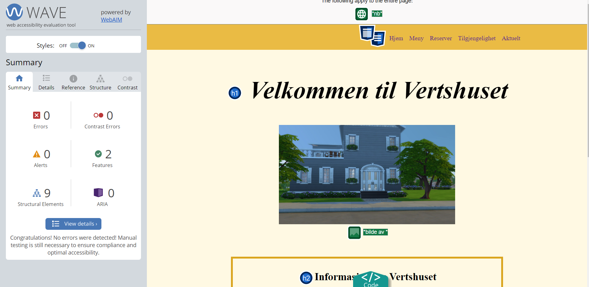
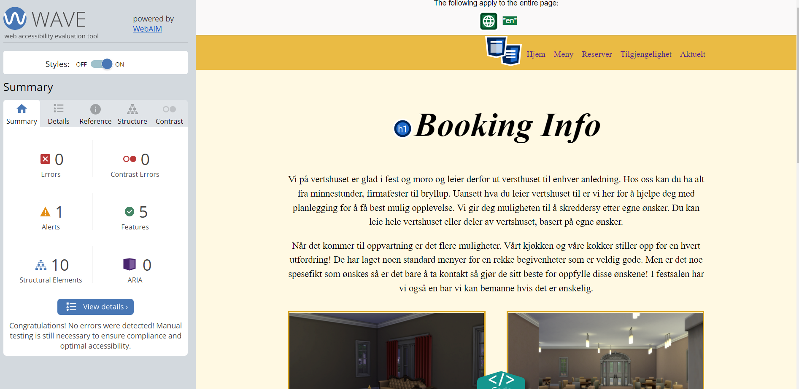
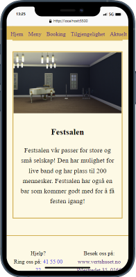

Gjennom utviklingen av nettsiden vår hadde vi stort fokus på å hele tiden lage og forbedre koden vår. Når det kom til å se over nettsiden vår valgte vi å bruke WAVE. Vi installerte WAVE som en utvidelse i Chrome nettleseren, dette for at vi hele tiden enkelt kunne bruke utvidelsen til å sjekke tilgjengeligheten av nettsiden vår, samt. korrigere feil / varsler “on-the-go”.
¨For eksempel støttet vi på et varsel fra WAVE på reservasjons siden vår om at vi gikk direkte fra “h1” til “h4”. Vi rettet dette ved å gjøre om header overskriftene i riktig rekkefølge og i stedet endret fontstørrelsen i css. Vi endret også navigasjonsmenyen til å være “nav” tags istedenfor “div”. Dette fikk vi ros for av WAVE. Det finnes mange flere slike eksempler gjennom hele utviklingen av prosjektet vårt, og vi tok i bruk dem alle.
På toppen av alle sidene våres ligger det en navigasjonsmeny som alltid er synlig og brukbar. Denne valgte vi å utvikle med tanke på brukervennlighet. Med denne menyen kan man navigere hvor enn man ønsker på nettsiden vår uavhengig av hvor på sidene man befinner seg (unntak er “Aktuelt”). Ved å gjøre det slik blir det enklere og raskere for brukere å finne frem til det man ønsker seg.
På bunnen av alle sidene våres (unntatt “Aktuelt”) ligger det kontakt informasjon og instrukser om hvor man finner vertshuset. Vi valgte å gjøre informasjonen her interaktiv ved at for eksempel hvis man trykker på telefonnummeret, vil du automatisk få opp en dialog om å ringe vertshuset (om dette støttes av nettleseren). Denne informasjonen ligger på samme sted og er lik uavhengig av hvilken side man befinner seg på. Dette gjorde vi bevisst med tanke på universell utforming og tilgjengelighet, da mange nettsider har et slikt oppsett og det er da logisk for brukeren å scrolle ned hvis man ønsker å finne slik informasjon. Det er også veldig enkelt å finne da det eksisterer på samme sted på alle sidene.
Vi valgte å lage en enkelt og estetisk ren side hvor vi hadde fokus på at den skulle være enkel å lese og navigere. Vi brukte enkle, lyse bakgrunnsfarger med svart tekst for å få store kontraster, samt holde bakgrunnen enkel. Dette gjør at den er lett leselig for alle aldersgrupper å bruke. I tillegg gjør den enkle siden det lettere for folk med nedsatt syn å bruke den. På “aktuelt-siden” valgte vi å skille oss ut fra dette med å bla. bruke bakgrunnsbilde for å vise litt mere kreativitet.
Vi har også lagt fokus på at nettsiden skal fungere på de fleste telefoner, og sjekket dette via en Chrome utvidelse hvor man kan simulere hvordan siden vil se ut på en telefon.
Når det kommer til kildehenvisning vil det ikke forekomme på noen på bildene våre, etter som vi valgte å lage/ta disse selv gjennom “The Sims 4” (som vi skapte/lagde). Andre kilder er blitt henvist.